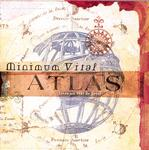

Home Artist links Label link

Minimum Vital - Atlas
| Artist: | Minimum Vital |
| Title: | Atlas |
| Label: | Musea FGBG 4533.AR |
| Length(s): | 49 minutes |
| Year(s) of release: | 2003 |
| Month of review: | [09/2004] |
Line up
Jean Baptiste Ferracci - lead vocal
Sonia Nédélec - lead vocal
Didier Ottavani - drums, percussion
Jean-Luc Payssan - acoustic and electric guitars, mandoline, vocals, percussion
Thierry Payssan - organ, synths, vocals, percussion
Eric Hebeyrol - bass
Tracks
| 1) | Saltarello | 3.49
|
| 2) | Volubilis | 7.01
|
| 3) | Louez Son Nom! | 7.35
|
| 4) | Voyage I | 7.31
|
| 5) | Deux Amis | 6.55
|
| 6) | La Ribote | 3.15
|
| 7) | Atlas | 6.41
|
| 8) | Icarus | 6.04
|
Summary
Within the symphonic rock scene, Minimum Vital has a place of its own,
by virtue of the large medieval music influence, but also by its
optimism and the use of both male and female vocals on their later albums.
Masterminded by the brothers Payssan, the band continues to release
their albums wayward of any trend in prog that might be happening. On the other,
some people have trouble calling this progressive rock.
The music
Saltarello is a typical Minimum Vital tune, with its optimistic folky sound and
the wordless vocal chants. What is strange is that they put the lyrics to the
songs in the booklet, are they less meaningless than they seem?
On Volubilis the typical paired vocals (male and female) are more prominent.
This is a more funky piece of work, meaning that the bass and drums punctuate
the music strongly. The guitar work is playful and very clear. I do wonder why
the band does not get in a flute player, instead of resorting to keyboards.
For variation, the middle section of this track is darker and more sinister.
The end features some church organ.
Louez Son Nom! opens with strumming acoustic guitar, after which an optimistic
danceable melody comes in. The song has some Tullian tendencies, but everything
stays light and sunny. If you really need references, I guess Oldfield comes
closest, especially in the guitar work. The final passage is vocally quite
a bit darker again.
Voyage I continues the line of the album, with a few very sweet melodies.
I have to admit that the many vocals on this album make it sound quite full
and easily tiring. Good then that the final passage gives us some piece.
With Deux Amis we come to quickly percolating acoustic guitar. The vocals
are more restful here, alternating instead of supporting. The Oldfield influence
can be heard again. The second part is more percussive again with the organ
and electric guitar playing a more prominent role. Some of the melodies have
a definite Arabic feel, while the organ gets in at the end for a fluently
melodic passage.
La Ribote is a shorter one among the songs. The guitar sound is typically
Oldfield again, the fluting synths are more folky and typical for Minimum Vital.
The middle part is Arabic sounding and the track is fully instrumental.
Atlas barges into your speakers without restraint. This is almost pomprock
but with fluting keyboards. The main theme is quite memorable, or could I have
heard it somewhere else? Then the music transitions into a much slower passage
with burbling keys, after which the somewhat tinny sounding up-beat part back.
Hey, a few vocals crop up here, even. Then it is gloomy time again. This is not
the best tune on the album, although it might be the most varied. It has the
tendency to sound like home made American prog,
The album closes shop with Icarus, a mid-tempo piece with plenty of pipe
organ and the usual Vital harmonies. It sounds the album out well.
Conclusion
The trouble with optimistic danceable music is that it easily becomes senseless
entertainment. Minimum Vital seem to have made it their life work to make
complicated yet sunny and danceable music. It is not strange that they often
look to folk music for their inspiration, but instruments like keyboards and
the electric guitar do have an important place, making the music closer
to symphonic rock as we know it, similar to some of the work of Mike Oldfield.
Still, prog purists will hardly know what to do with this band, mistaking
lightheartedness for emptyheadedness. On the other hand, people outside prog may
enjoy Minimum Vital without
knowing where they come from. It does not really matter, but if your friends
insist that symphonic is either depressingly gloomy or empty bombast, you could
at least try Minimum Vital on them. The least you will do is broaden their
horizon somewhat.
© Jurriaan Hage